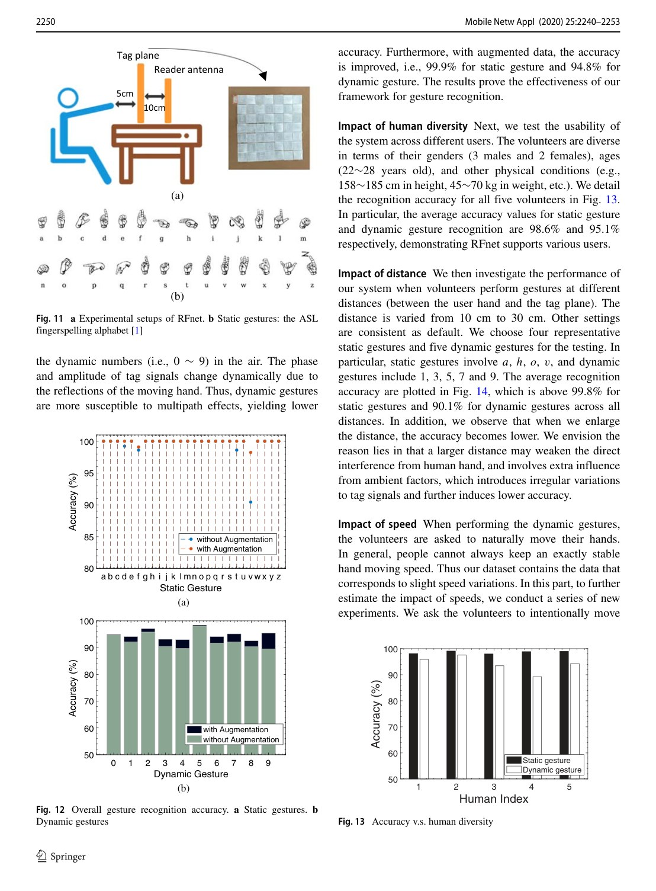
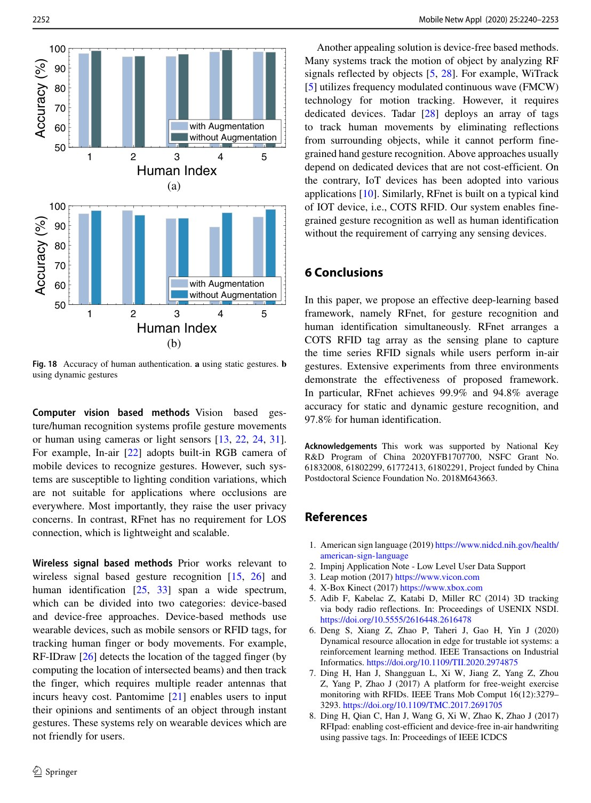

Mobile Networks and Applications 25 (6), 2240-2253, 2020
Publication
RFnet: Automatic gesture recognition and human identification using time series RFID signals
H Ding, L Guo, C Zhao, F Wang, G Wang, Z Jiang, W Xi, J Zhao
RFnet uses a multi-branch 1D CNN to recognize static gestures, dynamic gestures, and user identity directly from time-series RFID signals without heavy handcrafted features.
RFID Gesture Recognition
Xi'an Jiaotong University; Xidian University
Overview
Gesture recognition enables touchless human-computer interaction, but cameras depend on lighting and raise privacy concerns, while wearable approaches require users to carry devices. Device-free wireless sensing offers another path, yet many earlier systems rely on heavy handcrafted preprocessing and feature engineering.
RFnet studies whether time-series RFID signals can be used more directly. It arranges a commercial RFID tag array as a sensing plane and uses a multi-branch 1D CNN to recognize gestures and identify users.
Main Contributions
- Proposes RFnet, a deep-learning framework for time-series RFID sensing.
- Recognizes static gestures, dynamic gestures, and human identity in one framework.
- Uses multi-branch 1D convolution to learn from raw temporal RFID signal fluctuations.
- Reduces the need for handcrafted feature engineering.
- Evaluates the system in three environments.
Method Design
The RFID tag array captures signal changes as users perform in-air gestures. RFnet processes these time-series signals with multiple convolutional branches, allowing the model to capture patterns at different temporal resolutions and signal channels. The learned representation is then used for gesture classification and identity recognition.
This design is practical for smart homes and interactive systems because the user does not need to wear a sensor or stand in front of a camera.
Evaluation Highlights
The paper reports 99.9 percent average accuracy for static gesture recognition, 94.8 percent for dynamic gesture recognition, and 97.8 percent for human identification. Experiments across three environments demonstrate that the learned temporal features generalize beyond a single room setup.
Takeaways
RFnet shows the value of end-to-end temporal learning for RFID sensing. It shifts the burden from manual feature design to representation learning while keeping the sensing setup device-free for the user.
Paper Screenshots: Method, Principle, And Results
The screenshots below are cropped from the paper PDF and are placed next to the reading notes so the page shows the actual method diagrams, principle illustrations, and result evidence rather than only prose.


Resources
{kind=link}
Citation
@inproceedings{rfnet-automatic-gesture-recognition-and-human-identification-using-time-series-rfid-signals,
title = {RFnet: Automatic gesture recognition and human identification using time series RFID signals},
author = {H Ding and L Guo and C Zhao and F Wang and G Wang and Z Jiang and W Xi and J Zhao},
booktitle = {Mobile Networks and Applications 25 (6), 2240-2253, 2020},
year = {2020}
}